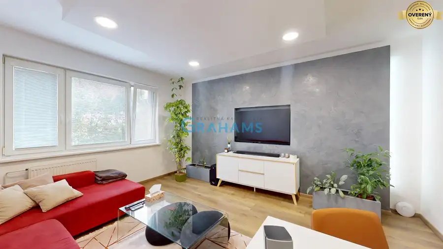
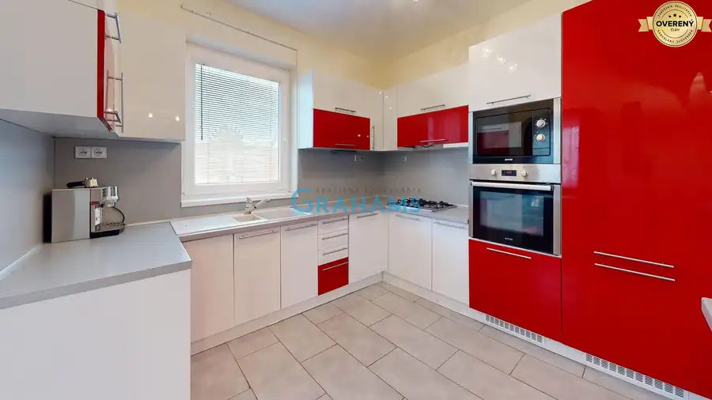
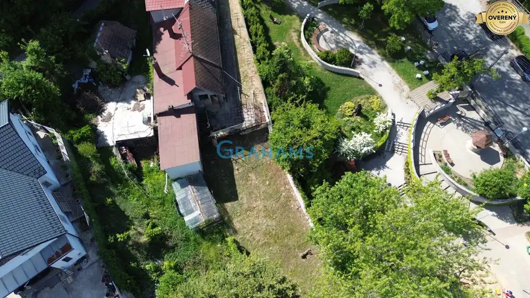

Rekreačný pozemok 1013 m2, záhradna chatka, Záhorska Bystrica
Záhorská Bystrica, Bratislava
- Plocha1013 m²
- Poschodie0.
- Stavpôvodný
O nehnuteľnosti
Realitná kancelária Grahams
Vám v exkluzívnom zastúpení klienta ponúka na predaj rekreačný pozemok so záhradným domom v mestskej časti Bratislava – Záhorská Bystrica. Pozemok je určený na rekreačné, záhradkárske a chatové využitie. Má výmeru 1 013 m² a nachádza sa vo výnimočnom prírodnom prostredí na hranici lesa, obklopený Malými Karpatmi, ktoré poskytujú pokoj, súkromie a príjemnú atmosféru na oddych počas celého roka. Vďaka svojej orientácii na východ a západ ponúka dostatok slnečného svetla počas celého dňa a krásne výhľady na okolitú zeleň a krajinu, čo ešte viac umocňuje jeho rekreačný charakter.
VIDEO PREHLIADKA: https://www.youtube.com/watch?v=moqf03bZc70
INFORMÁCIE O POZEMKU:
Typ: rekreačný pozemok so záhradným domom
Lokalita: Bratislava – Záhorská Bystrica
Výmera pozemku: 1 013 m²
Stav záhradného domu: pôvodný
Využitie: rekreačné, záhradkárske a chatové
Orientácia: východ – západ
Terén: mierne svahovitý
Elektrická prípojka: 230/400 V
Vlastný elektromer
Voda: vlastná studňa
Prístupová cesta: neupravená cesta
Územnoplánovacia informácia: áno
Funkčné využitie územia: kód 1203
POZEMOK A VYBAVENIE:
Pozemok disponuje vlastnou elektrickou prípojkou s napätím 230/400 V, vlastným elektromerom a vlastnou studňou. Súčasťou pozemku je záhradný dom v pôvodnom stave, ktorý môže slúžiť na rekreačné využitie alebo ako základ pre jeho budúcu rekonštrukciu podľa predstáv nového majiteľa. Mierne svahovitý terén ponúka široké možnosti úprav a realizácie rekreačného bývania, záhradkárčenia alebo vybudovania príjemného víkendového zázemia. Veľkým benefitom je jedinečné umiestnenie priamo na hranici lesa v nádhernom prostredí Malých Karpát, ktoré poskytuje dostatok súkromia, pokoj a bezprostredný kontakt s prírodou. K pozemku máme k dispozícii aj územnoplánovaciu informáciu, ktorú Vám radi zašleme na vyžiadanie. Funkčné využitie územia je vedené pod kódom 1203.
LOKALITA:
Záhorská Bystrica patrí medzi najvyhľadávanejšie lokality Bratislavy pre rekreáciu aj bývanie. Lokalita ponúka jedinečné spojenie prírody a výbornej dostupnosti do mesta. Okolie je ideálne na turistiku, cyklistiku, prechádzky a ďalšie voľnočasové aktivity v prostredí Malých Karpát. Do centra Bratislavy sa dostanete za niekoľko minút autom, pričom mestská časť disponuje kompletnou občianskou vybavenosťou vrátane obchodov, služieb, reštaurácií, škôl, materských škôl a zastávok MHD.
HLAVNÉ VÝHODY:
Výmera pozemku 1 013 m².
Záhradný dom v pôvodnom stave.
Elektrická prípojka 230/400 V.
Vlastný elektromer
.
Vlastná studňa.
Mierne svahovitý terén.
Orientácia východ – západ.
Výnimočné umiestnenie na hranici lesa.
Krásne prírodné prostredie Malých Karpát.
Pokojná lokalita.
Výborná dostupnosť do Bratislavy.
K dispozícii územnoplánovacia informácia.
Funkčné využitie územia pod kódom 1203.
Ak hľadáte miesto pre víkendový oddych, záhradkárčenie alebo rekreačnú chatu v krásnom prírodnom prostredí a zároveň chcete zostať len pár minút od Bratislavy, táto nehnuteľnosť predstavuje výnimočnú príležitosť.
CENA:
Cena nehnuteľnosti je 119EUR/m² vrátane provízie a kompletného právneho servisu. Kúpne zmluvy autorizujeme advokátom. V prípade záujmu o obhliadku alebo doplnenie informácií nás neváhajte kontaktovať. Som tu pre Vás, aby celý proces prebehol rýchlo, profesionálne a s istotou. Teším sa na osobné stretnutie.
KONTAKT:
V prípade záujmu o obhliadku alebo doplnenie informácií nás neváhajte kontaktovať.
Zodpovedný maklér:
Anton Trška
@grahams.sk)
Upozornenie: Popis nehnuteľnosti, text a fotodokumentácia sú majetkom a autorským dielom spoločnosti Grahams © Copyright Grahams.
Parametre
| Rozloha pozemku | 1013 m² |
|---|---|
| Poschodie | prízemie |
| Stav | pôvodný |
| Voda | studňa |
| El. napätie | 230/400V |
| Plyn | nie |
| Kanalizácia | nie |
| Orientácia | východ/západ |
| Terén | mierny svah |
| Prístupová cesta | neupravená cesta |
| Dátum zverejnenia | 18. 6. 2026 |
Kde to je
Mohlo by Vás zaujímať

Byt10 279 990 €Moderný 3-izbový byt po kompletnej rekonštrukcii, Budatínska Petržalka, Bratislava 3-izbový70.73 m²5. podlažie Realitná kancelária Grahams Vám v exkluzívnom zastúpení klienta ponúka na predaj štýlový 3-izbový byt po nadštandardnej kompletnej rekonštrukcii,…
Rodinné domy10 339 990 €Zariadený 4-izbový dom Rovinka – Okružná, pozemok, parkovanie Rovinka 4-izbový138 m² Realitná kancelária Grahams Vám v exkluzívnom zastúpení klienta ponúka na predaj 4-izbový rodinný dom, skolaudovaný v roku 2011, nachádzajúci sa na…
Pozemok7 269 990 €Stará Dúbravka, stavebný pozemok 459 m², všetky siete, UPI Dúbravka, Bratislava 459 m² Realitná spoločnosť GRAHAMS vám v exkluzívnom zastúpení ponúka na predaj atraktívny stavebný pozemok v srdci starej Dúbravky na ulici K Horárskej…